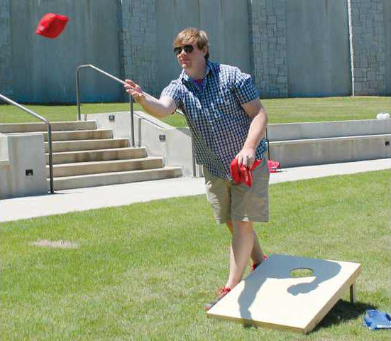
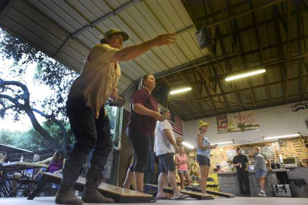
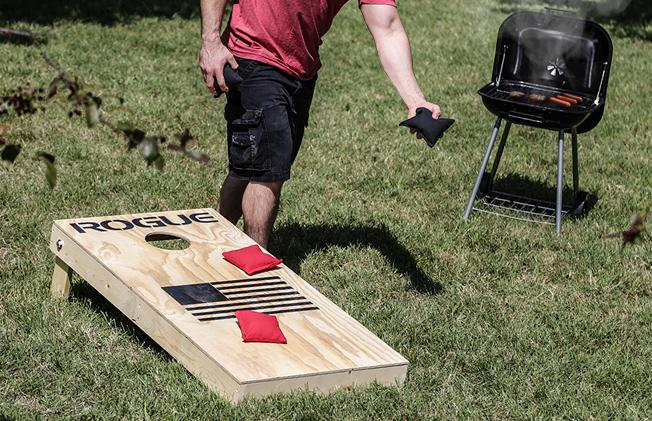

Many people when beginning to throw a cornhole bag will start with a step throw, much like in throwing a baseball or similar to bowling. Just as with throwing a baseball when pitching a cornhole bag you'll generally step forward with your non-dominant foot (the foot opposite your throwing arm). When using a step throw you'll want to start your stance at the back of the board and step forward to the front of the board.
The main advantages to step-throwing are (1) that it may feel most natural when compared to other throwing motions and (2) the step throw allows for a lot of momentum to be added to the throw.
Many people will probably find step-throwing to be perfectly comfortable and enjoy the momentum they can generate but as players advance many decide to try a static stance. Keeping the feet stationary can allow for more accuracy when throwing. If you are a step thrower it is very important that your feet land in the same position for accuracy whereas with a static position the thrower does not have to worry about where the foot lands. The con to a static stance is that more of the power of the throw is generated through the arm itself and not the legs.
If you choose to try a static stance and it feels comfortable then the only decision is which foot to put forward. Most people will probably feel comfortable putting the non-dominant foot in front. This is the more natural positioning when compared to other throwing motions like bowling or throwing a baseball and it keeps the front leg out of the way of the arm when swinging forward. Some throwers, though, may feel more comfortable putting the dominant foot forward. Having this foot forward can give the thrower a better targeting position (point your foot where you want to throw) but you do have to be mindful not to hit your leg (or clothing) as you swing your arm forward.
A lesser used static stance in cornhole throwing is the flat-footed stance. In this option both feet are essentially lined up at the front of the board. As you can imagine balance is key with this stance and again much of the throwing power is generated from the arm alone. This is a stance that is used, though, and as a thrower the most important facet is finding a stance that feels comfortable to you so if this is the stance that feels most comfortable to you feel confident in knowing many great players throw from this stance.
Once you feel comfortable standing next to the board it's time to grip a bag and start throwing! Easy enough, but again there are some choices to be made. Most people, when beginning, grab a bag sort of like a ball. They crumple the bag in their hand and toss it much the same way as throwing an underhand softball pitch. You can go this route, absolutely nothing wrong with it if you enjoy the game this way. What you may find, though, is that the bag is hard to control in the air and once it hits the board. The wind may push it a little this way or that as it tumbles through the air and once it makes it to the board it may bounce any direction it pleases depending on how it lands and if it hits other bags on the board. So what is the solution? Throwing a "flat" bag. A flat bag is one that glides through the air somewhat on a plan parallel to the ground and spins a little like a frisbee as it flies through the air. Once on the board a flat bag will generally slide a bit in the same direction it landed; you have a bit of control on what happens when it lands rather than just crossing your fingers and hoping for the best!
How do we throw a flat bag? It is all about how you grip the bag and how you release it in your forward swing. The easiest way to start is to think about holding a sandwhich as the picture below!

As you get comfortable with this type of bag hold you can explore some of the minor variations to the hold, but you'll be well on your way to throwing an effective flat bag!

The most basic way to begin throwing a flat bag is by grabbing the bag on one side with four fingers on the underside of the bag and a thumb on top right in the middle of the bag. As in the picture here the natural position is for the thumb to be parallel to the board you are throwing at as you move through your forward swing. With this grip position you may choose to grip further towards the front of the bag (but still on the side) or toward the back of the bag, or you may feel completely natural right in the middle. You just have to grip and throw and find what feels the most comfortable to you. Using this basic grip some throwers find they can get a better grip on the bag by tucking their knuckles under their fingers a bit and digging their fingers into the bag rather than having the fingers flat. People with smaller hands may find some benefit to this. As another small adjustment some throwers like to grip the side of the bag towards the front and wrap the index finger around the front corner of the bag. This sort of hand positioning may help some with aiming and spinning the bag.

A minor variation on the previous bag hold is to grip the bag from the back and push the bag forward rather than throwing it like a frisbee from the side. This again is a minor variation on the previous hold but it could be worth trying for people who are not completely comfortable with the side hold. With this grip the same adjustments can be made in terms of holding the bag a little left or right of middle (as compared to front or back with a side hold) and again some throwers may find it more comfortable to keep the fingers flat while others may need to tuck the knuckles in a bit for a better grip.
So now you have a nice comfortable stance and know the way to grip a bag for a successful throw. All that is left is aiming and as with all thwrowing motions perfecting the two last components: the backswing and the forward swing/release! The most important things to remember here are being steady and consistent. Some people choose to have a long backswing, bringing the arm all the way back whereas with other throwers they may hold the bag in front of them to start and barely bring it back past the waste with a very short backswing. It is all about what feels natural and what works for you. As long as your backswing is steady and not too fast or jerky you will be just fine.
When you finish your backswing it is time to start the bag forward towards the board on which you hope to land. Again, consistency and steadiness are the keys! The goal is to accelerate at a steady pace through the forward swing and not in a jerky motion. It is all about flow, not power. As your arm passes your waist and moves forward your arm should be straight with your elbow "locked" for accuracy. As you continue moving your arm forward your forearm should naturally rotate a bit which helps to impart the spin that is crucial for a flat bag that flies through the air like a frisbee. You want to refrain from "flicking" your wrist as the motion can make it hard to control the bag but you do want to rotate your hand slightly, about a quarter of a turn, near the end of the release. Generally at the start of this motion your thumb which has been on top of the bag will be parallel to the front of the board you are throwing to and as you finish the slight rotation your thumb will be pointing at the board and where you are trying to throw the bag. Your fingers will remain flat and your index and middle fingers will aid in implementing this spin as you release the bag. Above all, though, this motion should be natural and fluid, avoiding the "flick" of the wrist in an attempt to overspin the bag.

If you've made it this far then the finish should look something like the picture here: your arm should be straight out in front of you, elbow locked, and your fingers should generally be pointing to where you just threw the bag. If you've thrown it well you should also have a giant smile! You'll probably know the second you let the bag go. Now it's time to practice, practice, practice until the movement feels natural and easy and you don't have to think about how you're throwing as you throw. It's a fantastic feeling to just rear back and let the bag go and know you just let go a good flat bag!